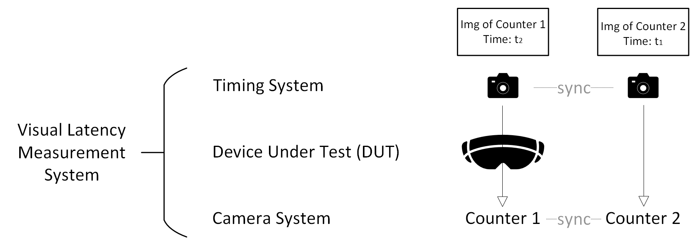

← Back
Ericsson — R&D Summer Internship | 06/2025 – 08/2025 | Lund, Sweden
Latency Measurement System for XR Devices
Overview
Measuring visual latency of VR and AR devices is important for
evaluating system performance across different communication methods.
However, commercial testing solutions are often expensive. Our system provides
a fast, low-cost, adaptive, intuitive, and stable approach for latency measurement.

L = (t1 - t2) · d
where d is the delay interval of the counter.
The measurement system principle is intuitive; however, several factors influence this system, including:
- the frequency of the numerical timing system
- the type and frame rate of the VST camera
- the display screen's refresh rate and method
- the shutter speed and frame rate of the recording camera
Contributions
The primary contributions include the implementation of a hardware-based photon-to-photon latency measurement system achieving ±2 ms accuracy, along with an analysis of how these factors interact based on observed phenomena.
In detail:
- Designed, implemented, and validated a hardware-based Photon-to-Photon latency measurement system for XR devices using synchronized global shutter cameras and custom Arduino counters, achieving ±2 ms accuracy.
- Developed a Flask-based web interface for Raspberry Pi 4B to enable portable, headless operation.
- Analyzed frequency interactions among Arduino counters, VST cameras, XR displays, and external capture cameras to determine how hardware type and configuration affected measured latency.
- Conducted latency measurements on Apple Vision Pro and Meta Quest 3, and extended the system to evaluate network-related visual latency, such as round-trip latency via FastRTC over Wi-Fi.